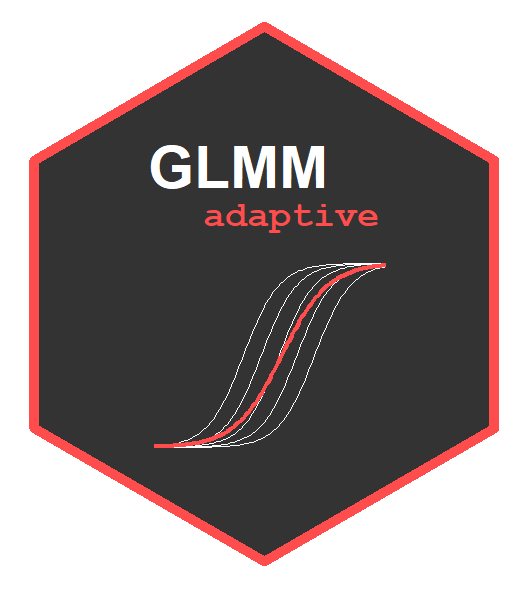

Package index
-
cr_setup()cr_marg_probs() - Functions to Set-Up Data for a Continuation Ratio Mixed Model
-
effectPlotData() - Predicted Values for Effects Plots
-
students.t()beta.fam()zi.poisson()zi.binomial()zi.negative.binomial()hurdle.poisson()hurdle.negative.binomial()hurdle.lognormal()hurdle.beta.fam()unit.lindley()beta.binomial()Gamma.fam()censored.normal() - Family functions for Student's-t, Beta, Zero-Inflated and Hurdle Poisson and Negative Binomial, Hurdle Log-Normal, Hurdle Beta, Gamma, and Censored Normal Mixed Models
-
GLMMadaptive-packageGLMMadaptive - Generalized Linear Mixed Models using Adaptive Gaussian Quadrature
-
marginal_coefs() - Marginal Coefficients from Generalized Linear Mixed Models
-
coef()fixef()ranef()confint()anova()fitted()residuals()predict()simulate()terms()formula()model.frame()model.matrix()nobs()VIF()cooks.distance() - Various Methods for Standard Generics
-
mixed_model() - Generalized Linear Mixed Effects Models
-
negative.binomial() - Family function for Negative Binomial Mixed Models
-
scoring_rules() - Proper Scoring Rules for Categorical Data